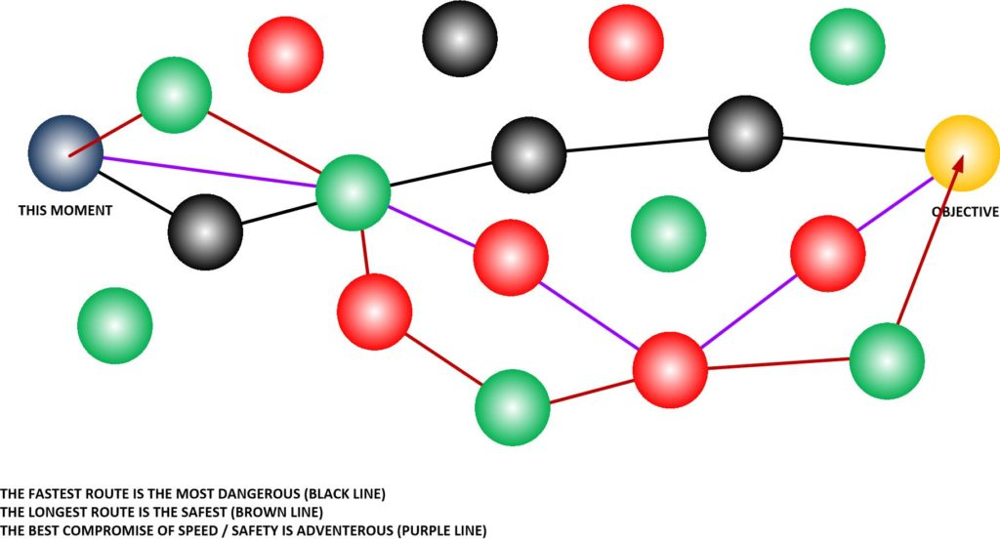
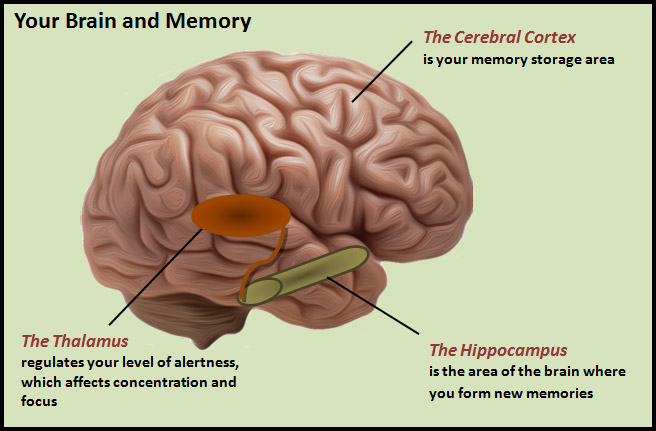

Phew! That’s a mouthful. Not really the best post title.
Here we address how your memories are accessed. We discuss how the memory “address” is accessed by the consciousness. We look at the differences between the physical brain, and thought / memories. And, finally, we look at the reincarnation process and why souls that have reincarnated cannot recall memories of prior incarnations.
Is is a post on how the soul uses memories to select world-lines to occupy.
Here, we are going to look at memories.
Yeah, I know. It sounds very boring. Doesn’t it?
Summary
The way that memories actually work in no way resembles what conventional science thinks. Here we present a very brief and simplistic overview of the system.
How it works.
Well, look at it this way. Our reality changes and molds to what we think. I covered this over and over before in other posts. Time is the movement of our consciousness as it moves in and out of world-lines.
And, of course, what we think thus changes our reality.
Because our thoughts determine what world-lines we enter into. So if we are thinking wonderful thoughts, and are calm, and direct our energy into wonderful things, our life would be wonderful.

But if we surround ourselves with negative thoughts, manipulative news, and people. If we are reacting to events instead of manifesting them, or if we hold grudges and evil negative thoughts… then our world experiences will become progressively darker and darker.
Thoughts generate memories.
Memories shape our thoughts.
Thus, our prior experiences shape the thoughts that we have. So they are crucially important to the creation of our life and our reality.
Thoughts create memories. Our memories influence how we think and what we think about. Our thoughts are influenced by our memories and the environment in our reality. So in order to overcome your immediate environment, you must overcome that influence and generate new and healthy thoughts.
It’s like this…
A poverty stricken beggar might yearn for a reality where he has a warm meal and a roof over his head from the rain. While a wealthy oligarch might yearn for forbidden activities, and serendipitous pursuits.
Why the difference?
It’s because of their experiences. And their experiences are molded by their memories which is a record of their reality.
Why are memories important?
Memories are important because they attract and repel quanta. You want a balanced mixture of good and bad memories so that the attractions are balanced.
That is how soul grows don’t you know.
The consciousness enters world-lines (via the MWI) and has experiences. These experiences are recorded as memories. These memories influence your actions and also power “The Law of Attraction” (for lack of a better term.)
Your realities are created by directed thoughts.
PLEASE SHUT OFF THE NEWS NOW. Do not allow the thoughts and actions of others to influence you, or cause you to live in fear.
Operate off your very own memories and your very own experiences.
Eventually, memories influence your thoughts in such a way that your sentience becomes defined. And we do want that, don’t you know. We want our sentience to be defined.
- Service for ones self. (“Western” societies preference.)
- Service for others. (Mantid preference.)
- Service for another. (Human oligarch preference for everyone else.)
- Service for things.
- No service what so ever.
- Disjointed and indeterminate sentience.
The brain does not record memories.
Firstly the brain does not record memories. Instead, it accesses them.
Memories reside outside any given reality and “world-line”.
Which is currently at odds with “modern” medical science. Pull up any internet article and they will point to specific regions in the brain where memories are “stored”.
- How Our Brains Make Memories | Science
- Where are memories stored in the brain?
- Memory and the Brain | Boundless Psychology
- The human memory—facts and information
- Your Brain Doesn’t Contain Memories. It Is Memories | WIRED
- Memory & The Brain | Where Is It Stored & How Is It Used?
- How Are Memories Stored in the Brain? | Live Science
- Parts of the Brain Involved with Memory
Sorry, but nope.

Those are the regions and areas inside the brain that accesses memories. they do not store them.
To use internet technology here…
Conventional Medical science Memories are recorded and goes directly into the brain "Hard Drive". As you get older more and more memories are packed inside of the "hard Drive". MAJestic understanding Memories are accessed from the cloud via a Wifi router. It collects the memories in "packets" and puts them in ROM / RAM for immediate use.
So instead of thinking of your brain as a big old hard-drive. You need to start thinking of it as a wifi router that accesses memories in the cloud.
How your memories are accessed.
Since the consciousness cycles in and out the physical repeatedly, each time the consciousness is outside of a world-line it refreshes the memory cache. It does not do this while it is within a reality.
- Inside a world-line reality. Particle behavior. Accesses stored memories and generate thoughts.
- Outside or between reality world-lines; dumps the physical memory contents to the non-physical memory stack. Gathers and collects all memories once dumped and generate new thoughts based on that combined action.
How the memory “address” is accessed by the consciousness.
In the “Heavens”; that space between world-lines, there are all sorts of things. It’s a realm of thought and all sorts and manner of activities. This includes thoughts and memories of others. Obviously there must be a mechanism for the consciousness to “anchor” onto the memories as they accrue over time.
There is.
The memories are “anchored” within the garbions of a soul.
The soul is composed of “clumps” of quanta. Each “clump” is called a garbion. Each garbion has a specific role for the soul. One such role is the assignment of memories for a given consciousness.
A soul can only assign memories out if it’s garbions via the consciousness that it projects.
Therefore, no one else can access then unless there is approval from the soul itself.
The differences between the physical brain, and thought / memories.
Thoughts and memories have no physical analog. You cannot measure them, trap them, or replace them. You can only suppress their access.
Further, the only way that the brain can access thoughts directly is through wave behavior. particle behavior are for process behaviors after the memories and thoughts have been processed.
The reincarnation process and why souls that have reincarnated cannot recall memories of prior incarnations.
A “consciousness” is generated by a soul for a given body to use to obtain experiences. It uses the power of directed thought to migrate in and out of the world-line realities to obtain experiences so that the soul would grow. As such, the experience, the thoughts and the memories are all associated with a given consciousness.
The soul can opt to permit reincarnated consciousnesses to retain prior experiences and memories when they enter into a new body. But this is rarely done.
The reason is simple.
The greater the number of memories you have, the less mistakes you will have. And thus the less new experiences that you would obtain. For the soul to grow, you need to start with a “clean slate” and learn from scratch to obtain new experiences, learn from mistakes and failures and to grow.
What this means
What this means is that if the physical body is old, the brain is damaged, or other physical travesties avail the human, the memories still exist. It’s just that they (at that moment in time) cannot access those memories. So a person who has dementia, can fully access all their memories when they enter the “spiritual realm”. This is the space in between the various world-lines (in the MWI).
Dead, and diseased pets, likes dogs and cats, can contact you and other loved ones once they passed on. And yes, this includes people and humans as well. I have an interesting post on this issue, that you all might want to read…

Technology
A species that can inject thoughts into another (telepathy) is utilizing a method and technology that lies outside a given MWI reality. In other words, they are injecting a thought into your consciousness (stream) while you are between MWI world-lines realities.
Like during my first encounter with the type-1 greys…
Or experiences that I myself had with horses, and drunk companions, which are stories for another time and another place.
Conclusion
To master your world, you MUST control your thoughts.
They help you navigate into the world-lines where you would obtain experiences of life.
To obtain those experiences that you want, you must radically demand full control over your thoughts. You must NOT allow yourself to be manipulated by American propaganda campaigns or the thoughts of others. The only reality that matters is your very own. Nothing else.
When you experience something, you will record that experience in all it’s aspects as a memory.
The memories that you have will influence how quickly you will be able to direct your thoughts and control your life. So please start experiencing great and positive experiences NOW. Control your thoughts.
Now, all that being said, you cannot control the thoughts of others. If you find yourself being chained to a negative thought generator, a mentally or socially ill person, or a dysfunctional person, they will hijack your thoughts. Do not allow that to happen. For they will hijack your life.
Finally, no human, can steal your memories. They can only suppress them, and implant new ones by all manner of manipulation and propaganda campaigns. That being said, there are species that have the technology to actually farm your memories and quanta. Luckily our benefactors are protecting us from them.
Think good thoughts. Your life depends upon it.
I hope that you enjoyed this post. I have many more here…
Articles & Links
You’ll not find any big banners or popups here talking about cookies and privacy notices. There are no ads on this site (aside from the hosting ads – a necessary evil). Functionally and fundamentally, I just don’t make money off of this blog. It is NOT monetized. Finally, I don’t track you because I just don’t care to.
To go to the MAIN Index;
- You can start reading the articles by going HERE.
- You can visit the Index Page HERE to explore by article subject.
- You can also ask the author some questions. You can go HERE .
- You can find out more about the author HERE.
- If you have concerns or complaints, you can go HERE.
- If you want to make a donation, you can go HERE.
Please kindly help me out in this effort. There is a lot of effort that goes into this disclosure. I could use all the financial support that anyone could provide. Thank you very much.
[wp_paypal_payment]